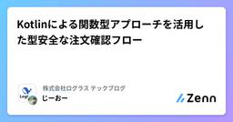
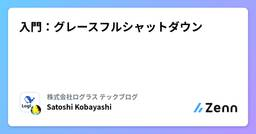
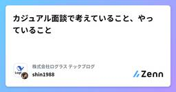
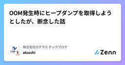
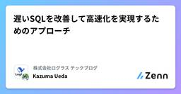
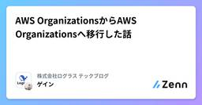
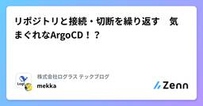
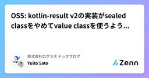
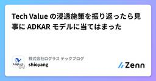

株式会社ログラス テックブログのフィード
https://zenn.dev/p/loglass
株式会社ログラスは「良い景気を作ろう。」をミッションに、企業経営を推進する次世代型経営管理クラウド「Loglass 経営管理」を開発し提供しています。
フィード

Kotlinによる関数型アプローチを活用した型安全な注文確認フロー
株式会社ログラス テックブログのフィード
!この記事は 株式会社ログラス Productチーム Advent Calendar 2024 のシリーズ 2 19日目 の記事です。かつ!この記事は毎週必ず記事がでるテックブログ Loglass Tech Blog Sprint の70週目の記事です！ 2年間連続達成まで 残り36週 となりました！こんにちは、ログラスでエンジニアをしております南部です。「この注文、必要なバリデーションがされずにユーザーに注文確認が実行されてない？」コードリーディングをしていて、そんなヒヤッとする経験はありませんでしょうか。結果問題ないことがほとんどですが、私は経験したことがありま...
1日前

入門：グレースフルシャットダウン 1
1
株式会社ログラス テックブログのフィード
!株式会社ログラス Productチーム Advent Calendar 2024 のシリーズ 1、19日目の記事です。おでんが美味しい季節になってきました。年末といえば、公私ともにやりかけたことを終えて新しく仕切り直したい、つまりシャットダウンの時期ですね。本記事では雰囲気で理解しがちなグレースフルシャットダウンを見ていきたいと思います。前半では基本的な概念、中盤に少し詳細を見て、後半に教養として歴史を辿ります。本日はサトシの方の小林が担当します。※ 主にWebアプリケーションエンジニアを想定しています。※ AWSを例にすることが多いです。 グレースフルシャットダウンとは...
2日前

カジュアル面談で考えていること、やっていること 1
株式会社ログラス テックブログのフィード
!この記事は 株式会社ログラス Productチーム Advent Calendar 2024 のシリーズ 1、18日目 の記事です。ログラスの勝丸(@shin1988)と言います。最近はマネージャーをやっています。今回のアドカレは「カジュアル面談」について、自分がどの様に行っているのかを整理したいと思います。本記事はエンジニア、及びプロダクトづくりをされていて、カジュアル面談を実施する方を読者として想定しています。 カジュアル面談の目的目的ですが、自社についての解像度を少しでも上げていただく場と自分は整理しています。なので無理やり採用活動につなげるなどは全く考えていま...
2日前

OOM発生時にヒープダンプを取得しようとしたが、断念した話 1
株式会社ログラス テックブログのフィード
!この記事は 株式会社ログラス Productチーム Advent Calendar 2024 のシリーズ 2、16日目 の記事です。 はじめにこんにちは！株式会社ログラスでクラウドエンジニアをしているAtsushiです。本記事では、ECS上で稼働しているコンテナからヒープダンプを取得しようとして、見事に失敗したので、そこで得た学びをご紹介します。今回の内容はDatadogのmeetupでお話ししたこちらの内容を元に作成した記事となっています。 そもそもなぜやろうと思ったのかログラスでは主にDatadogを使ってシステムの監視を行っています。その中で、Datad...
4日前

遅いSQLを改善して高速化を実現するためのアプローチ
株式会社ログラス テックブログのフィード
!この記事は 株式会社ログラス Productチーム Advent Calendar 2024 のシリーズ 1、16日目 の記事です。こんにちは、株式会社ログラスでエンジニアをしている上田（@ueda1013）です。この記事では、大規模データを扱う中でよく直面する SQL パフォーマンスの課題について、例題を用いて改善の一例をご紹介します。大規模なデータを扱うシステムでは、データの明細数が数百万〜数千万件に及ぶことも珍しくありません。そのため、SQL がアプリケーション全体のパフォーマンスに大きく影響することが多いですが、適切な対策を取ることで大幅な改善が可能です。この記事...
4日前

AWS OrganizationsからAWS Organizationsへ移行した話 1
株式会社ログラス テックブログのフィード
!この記事は 株式会社ログラス Productチーム Advent Calendar 2024 のシリーズ 2、15日目 の記事です。 はじめに健康診断の結果と忘年会の流れがとても怖いクラウド基盤チームのゲインです。忘年する前に、AWS環境を健全にする話をします。 背景ログラスではAWSを主に使用しており、AWS Organizationsの使用や、AWS IAM Identity Center(旧SSO)を利用したSSOなどに対応しある程度の利便性とセキュリティに配慮した構成になっていました。以前は以下の図ようなアカウント体系でAWS Organizationsが...
5日前

リポジトリと接続・切断を繰り返す 気まぐれなArgoCD！？ 2
株式会社ログラス テックブログのフィード
!この記事は 株式会社ログラス Productチーム Advent Calendar 2024 のシリーズ 1、15日目 の記事です。 はじめにこんにちはエンジニアの見形です。早いもので10月にログラスにジョインしたなーと思ったらあっという間にアドベントカレンダーの時期になっていました。何を書こうか迷ったのですが、ログラスの経験がまだ浅いのでこれまでの経験談からチップス的な話をしようと思います。私はシステムの基盤の構築をする機会が多いのですが、複数のツールを連携させるケースが多いのでうまく動かない場合は原因の調査が一苦労です。何がうまくいっているか・うまくいっていない...
5日前

インシデント対応を標準化するテンプレート活用事例 3
株式会社ログラス テックブログのフィード
!この記事は 株式会社ログラス Productチーム Advent Calendar 2024 のシリーズ 2、14日目 の記事です。 はじめに本記事においてのインシデント対応は、組織において発生したセキュリティインシデントやシステム障害などの事象に対し、影響範囲の調査、復旧作業、お客様への通知などを迅速かつ効果的に対処するためのプロセスや活動を指します。 課題感インシデント対応においてよくある課題として、以下のような声を聞くことがあります。ビジネスサイド作業中に誰が何をやってるか分からないいつ、何が起こったのかを知りたいエンジニアサイド後から振り返...
6日前

OSS: kotlin-result v2の実装がsealed classをやめてvalue classを使うようになっていたので読んでみる 1
株式会社ログラス テックブログのフィード
!この記事は 株式会社ログラス Productチーム Advent Calendar 2024 のシリーズ 1、13日目の記事です。 はじめにkotlin-resultは Rust、Elm、HaskellのResult型にインスパイアされたようなインターフェースを持つライブラリです。https://github.com/michaelbull/kotlin-resultちょうど2年前のアドベントカレンダーではこのkotlin-resultの実装を読んで、Kotlinの理解を深めていくという記事を書きました。https://zenn.dev/loglass/article...
7日前

Tech Value の浸透施策を振り返ったら見事に ADKAR モデルに当てはまった
株式会社ログラス テックブログのフィード
!この記事は 株式会社ログラス Productチーム Advent Calendar 2024 のシリーズ 1、12日目の記事です！かつ!この記事は毎週必ず記事がでるテックブログ Loglass Tech Blog Sprint の69週目の記事です！ 2年間連続達成まで 残り37週 となりました！こんにちは、ログラスで EM をしている塩谷 @shioyang です！今年の 2 月、ログラスのエンジニアリング組織では Tech Value: Update Normal を公開しました。どんなバリューも単に発表しただけでは組織に浸透することはまれです。この記事では、T...
8日前

「リファクタリングの時間」を確保する技術
株式会社ログラス テックブログのフィード
!この記事は 株式会社ログラス Productチーム Advent Calendar 2024 のシリーズ 2、11日目 の記事です。 はじめにソフトウェア開発において、リファクタリング、つまりコードの保守性を高める活動は、ソフトウェアの価値を高める上でとても大切ですよね。しかし、「リファクタリングの時間が確保できない」「リファクタリング実施のための同意が得られない」という話を耳にすることがあります。リファクタリングは「絶対やった方がいいのは感覚としてはわかっている、でもその必要性ををうまく伝えられない」となりがちな性質があるのです。この記事では、リファクタリングの時間を...
9日前
①ドメインモデルの分類と②関数型DDDによる実装パターンを考える 〜「事業活動」の構成要素とは...？〜
株式会社ログラス テックブログのフィード
!この記事は 株式会社ログラス Productチーム Advent Calendar 2024 のシリーズ 1、9日目 の記事です。 サマリードメインモデルには以下の種類がありそう🧠 業務知識: 知識レベル🏃 業務フロー: オペレーションレベル🧠業務知識（知識レベル）について、以下のような分類ができそう業務手順の知識: プロセスモデル業務資源情報の知識: リソースモデル属性・値の知識: プロパティモデル意思決定・制約条件の知識: ポリシーモデル🏃業務フロー（オペレーションレベル）について、以下の構成要素がありそう業務連鎖: ワー...
11日前
状態遷移の悩みを解決！DDDでシンプルかつ堅牢な状態遷移の設計を実現する方法
株式会社ログラス テックブログのフィード
!この記事は 株式会社ログラス Productチーム Advent Calendar 2024 のシリーズ 2、9日目 の記事です。 はじめにドメイン駆動設計（DDD）は、ビジネスドメインをソフトウェアに正確に反映させるための強力なアプローチです。その中でも、状態遷移の設計は、ドメインの振る舞いを表現するための核となる部分です。ドメインモデルで「状態」をどのように扱うかは、システム全体の品質に大きな影響を与えます。例えば、注文管理システムでは、注文が「未処理（注文時）」→「処理中」→「配送中」→「配送完了」と遷移する過程を管理する必要があります。この状態遷移を正しく設計しな...
11日前
障害を防ぐための関数型エラーハンドリング（前編）
株式会社ログラス テックブログのフィード
!この記事は 株式会社ログラス Productチーム Advent Calendar 2024 のシリーズ 2、8日目 の記事です。いつの間にか始まっていたアドベントカレンダー、本日は8日目になります。気がつけばもう12月ですね。迫りくる年末年始、システム障害に振り回されずゆっくり過ごしたいものですよね。さて本日はそんな障害に立ち向かうための、エラーハンドリングについてお話したいと思います。ソフトウェア開発においてエラー処理は避けて通れない課題です。しかし、適切でないエラー処理はシステム全体の障害を引き起こしやすく、特に例外（Exception）の濫用は重大な問題を生みがち...
12日前
ECSのTaskProtectionを利用して安全なタスクの入れ替えを実現する
株式会社ログラス テックブログのフィード
!この記事は 株式会社ログラス Productチーム Advent Calendar 2024 のシリーズ 1、8日目 の記事です。 はじめにこんにちは、ログラスでエンジニアをしています粟田（@wooootack）です。今日は久しぶりに純粋な技術記事を書こうと思います！ぜひ最後までお付き合いください。唐突ですが、皆さんのバックエンドアプリケーションには非同期処理が実装されているでしょうか？恐らく、ほとんどの方が 「はい」 と答えるのではないでしょうか。現代のアプリケーションにおいて、非同期処理は非常に重要な役割を担っています。特に、ユーザーリクエストに対する迅速な応答...
12日前
Best Practices for B2B SaaS Architecture with Auth0
株式会社ログラス テックブログのフィード
はじめに!この記事は 株式会社ログラス Productチーム Advent Calendar 2024 のシリーズ 1、7日目 の記事です。ログラスに転職して3年が経ち、ついに4年目に突入してしまいました。ログラスで書くアドベントカレンダーはこれで3回目になると思うと、何を書くか迷ってしまいますね...。ということで、今回は過去に書いていたAuth0 Organizationの記事の発展版を書いてみようと思います。https://zenn.dev/urmot/articles/8c18d8b49d822c今回の記事ではAuth0の「Multiple Organiza...
13日前
【やってみた】Cursorと始める形式手法（Alloy）
株式会社ログラス テックブログのフィード
!この記事は毎週必ず記事がでるテックブログ "Loglass Tech Blog Sprint" の 68 週目の記事です！2 年間連続達成まで 残り 38 週 となりました！ はじめに（前置き）こんにちは、世界。ログラスでQAエンジニアを担当している大平です。突然ですが、みなさん、仕様のレビューをしていますか？レビューをしている場合は、どうやって行っていますか？私はQAエンジニアとして、過去に実施したテスト経験や起きた不具合、既存の機能との整合性や矛盾点、競合製品がどうなっているか、テストのしやすさなどの観点でレビューを実施します。（ちなみにレビューについては、書籍...
14日前
チーム全員で品質課題の改善のために取り組んだことを振り返る 〜いつからQAエンジニアがいなければ改善できないと錯覚していた？〜
株式会社ログラス テックブログのフィード
!この記事は 株式会社ログラス Productチーム Advent Calendar 2024 のシリーズ 2、5日目 の記事です。 はじめにこんにちは、ログラスのエンジニアの粟田（@wooootack）です。時間の流れは早いもので、私がログラスに入社してもうすぐ1年が経過します。今回は、入社してからの1年を振り返り、私たちのスクラムチームが直面した品質課題と、それを乗り越えるための奮闘を実体験に基づいて紹介します。チームに専属QAがいない環境でも、チーム全体で品質課題の改善に向けてどのような取り組みを行ったのか、その過程で得られた学びや教訓を共有していきます。エッセイ要...
15日前
Webアプリケーションにグラフ埋め込む~Tableau Embeddedの活用法~
株式会社ログラス テックブログのフィード
はじめに!この記事は 株式会社ログラス Productチーム Advent Calendar 2024 のシリーズ 2、4日目 の記事です。こんにちは、ログラスでエンジニアをしております、田中です（@kakke18_perry）。Webアプリケーション上にあるデータ、例えばユーザーの行動ログなどをダッシュボードで視覚的に表現したいというニーズは多いのではないでしょうか。Webアプリケーションにグラフ機能を実装する方法は複数あります。自前で実装する、Chart.jsなどのライブラリを使用する、BIツールを組み込むなど、様々なアプローチが考えられます。本記事では、その選...
16日前
AWS CLIやSDKからAWSへのAPIリクエストをGoでProxyしたい！
株式会社ログラス テックブログのフィード
はじめに!この記事は 株式会社ログラス Productチーム Advent Calendar 2024 のシリーズ 2、3日目 の記事です。re:InventのKeynoteが楽しみなガイです。飲み会帰りの電車で家とは逆向きに向かい終点までついたり、その後正しい向きで目的の駅を乗り過ごしたり散々な帰路の中、AWSへのAPI CallをProxyしたいなと思ったらしい履歴がSlackに残ってたので試してみました 🐰🍺 AWSのAPIについてまずはAWSのSDKやCLIコマンドからリクエストを受け取るにはどのようにSDKなどからリクエストが行われるかを知らなければなりま...
17日前